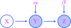
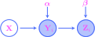
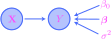
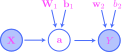

10. Probabilistic models#
THIS CHAPTER IS CURRENTLY UNDER CONSTRUCTION!!!
10.1. Probabilistic graphical models#
Let’s begin in the simple case with two deterministic vectors \(\bx\in \bbr^n\) and \(\by \in \bbr^m\). By saying that there is a deterministic flow of influence from \(\bx\) to \(\by\), we shall mean simply that there is a function
called a link function. It will be convenient to depict this situation graphically by representing the variables \(\bx\) and \(\by\) as nodes in a graph and the link function \(g\) as an arrow between them:
{kind=link}
Very often, the label \(g\) on the link function will be omitted.
It could be the case that flow of influence is parametrized. For example, \(g\) might be a linear transformation that is represented by a matrix \(\balpha \in \bbr^{m\times n}\), with the entries in the matrix serving as parameters for the flow. We would represent this situation as

where the parameter matrix is represented by an un-circled node.
For a more complex example, consider the following graph:

This might represent a link function of the form
which is parametrized by matrices \(\balpha \in \bbr^{m\times n}\) and \(\bbeta \in \bbr^{m\times k}\).
The vectors in our discussion might be random, rather than deterministic, say \(\bX\) and \(\bY\). In this case, a stochastic flow of influence from \(\bX\) to \(\bY\) would be visualized just as before:
{kind=link}
This flow is represented mathematically via a link function \(\btheta = g(\bx)\) where \(\bx\) is an observed value of \(\bX\) and \(\btheta\) is a parameter that uniquely determines the probability distribution of \(\bY\). So, in this case, an observed value \(\bx\) does not determine a particular observed value \(\by\) of \(Y\), but rather an entire probability distribution over the \(\by\)’s. This probability distribution is conditioned on \(\bX\), so the link function is often specified by giving the functional form of the conditional probability function \(p(\by | \bx)\). Notice that only observed values \(\bx\) of \(\bX\) are used to determine the distribution of \(\bY\) through the link—the distribution of \(\bX\) itself plays no role.
These stochastic flows might be parametrized. For example, suppose \(\bY\) is \(1\)-dimensional, equal to a random variable \(Y\), while \(\bX\in \mathbb{R}^{n}\) is an \(n\)-dimensional random vector. Then, a particular example of a stochastic flow of influence is given by the graph

The parameters consist of a real number \(\beta_0 \in \bbr\), a vector \(\bbeta \in \bbr^{n}\), and a positive number \(\sigma^2 >0\). A complete description of the link function at \(Y\) is given by
In fact, this is exactly a linear regression model, which we will see again in Section 10.2 below, as well as in Chapters 11 and 17.
We shall take a flow of influence of the form

from a deterministic vector \(\bx\) to a stochastic one \(\bY\) to mean only one thing: There is a link function \(\btheta = g(\bx)\) where \(\btheta\) is a parameter that uniquely determines the distribution of \(\bY\). Such a link function is often specified by giving the functional form of the parametrized probability function \(p(\by; \bx)\).
On the other hand, a flow of influence from a random vector \(\bX\) to a deterministic vector \(\by\) might mean one of two things. The more common situation is depicted graphically with a solid arrow as
{kind=link}
In this situation, we mean simply that there is a link function of the form \(\by = g(\bx)\), so that observed values of \(\bX\) uniquely determine values of \(\by\). The other situation is depicted graphically with a dashed arrow as

Here, we mean that the probability distribution \(P_\bX\) itself uniquely determines a value \(\by\). For example, we might consider the flow where \(\bX\) and \(\by\) have the same dimension and are linked via the function \(\by = E(\bX)\).
The probabilistic graphical models that we will study in this chapter are meant to model real-world datasets. These datasets will often be conceptualized as observations of random or deterministic vectors, and these vectors are then integrated into a graphical model. These vectors are called observed or visible, while all others are called latent or hidden. To visually represent observed vectors in the graph structure, their nodes will be shaded; the nodes associated with hidden vectors are left unshaded. For example, if we draw
{kind=link}
then we mean that \(\bX\) is observed while \(\by\) is hidden.
It is important to note that for the simple types of models we consider in this chapter, the datasets consist of observations across all observed nodes in the model. For example, let’s suppose that we have a graphical structure of the form
{kind=link}
with two observed random vectors \(\bY\) and \(\bZ\) and one hidden. Then, by saying that \(\bY\) and \(\bZ\) are observed, we mean that we have in possession a pair \((\by, \bz) \) consisting of an observed values of \(\bY\) and \(\bZ\).
We may integrate IID random samples into our graphical framework as follows. Suppose that instead of a single copy of the graph above, we have a collection of graphs
{kind=link}
one for each \(i=1,\ldots,m\), where the random vector \(\bX\) and the parameters \(\balpha\) and \(\bbeta\) are assumed to be shared across all \(i\). In the case that \(m=3\) (for example), we may assemble all these graphs together into a single large graph

which explicitly shows that \(\bX\), \(\balpha\), and \(\bbeta\) are shared across all \(i\). Clearly, drawing these types of graphs becomes unwieldy for large \(m\), so analysts have invented a method for depicting repetition in graphs by drawing a rectangle around the portion that is supposed to be duplicated:

This is called plate notation, where the rectangle is called the plate. The visible nodes in the plate are assumed to be grouped as a pair \((\bY^{(i)},\bZ^{(i)})\), and altogether they form an IID random sample
We now have everything that we need to define probabilistic graphical models (PGMs) in general. After the definition, the remaining sections in this chapter are devoted to the study of particular examples of such models.
Definition 10.1
A probabilistic graphical model consists of the following:
A set of vectors, some random and some deterministic, and some marked as observed and all others as hidden.
A graphical structure depicting the vectors as nodes and flows of influence as arrows between the nodes. If any of these flows are parametrized, then the graphical structure also has (un-circled) nodes for the parameters.
Mathematical descriptions of the flows as (possibly parametrized) link functions.
10.2. Linear regression models#
The type of PGM defined in this section is one of the simplest, but also one of the most important. Its goal is to model an observed dataset
where we believe that
for some parameters \(\beta_0 \in \bbr\) and \(\bbeta \in \bbr^n\). For example, let’s consider the Ames housing dataset from the third programming assignment and Chapter 7; it consists of \(m=2{,}930\) bivariate observations
where \(x^{(i)}\) and \(y^{(i)}\) are the size (in square feet) and selling price (in thousands of US dollars) of the \(i\)-th house in the dataset. A scatter plot of the dataset looks like
Show code cell source
import pandas as pd
import numpy as np
import matplotlib.pyplot as plt
import matplotlib.colors as clr
import matplotlib_inline.backend_inline
import seaborn as sns
import scipy as sp
from itertools import product
import warnings
plt.style.use('../aux-files/custom_style_light.mplstyle')
matplotlib_inline.backend_inline.set_matplotlib_formats('svg')
warnings.filterwarnings('ignore')
blue = '#486AFB'
magenta = '#FD46FC'
# linear regression example begins below
# import linear regression model from scikit-learn
from sklearn.linear_model import LinearRegression
# import data
url = 'https://raw.githubusercontent.com/jmyers7/stats-book-materials/main/data/data-3-1.csv'
df = pd.read_csv(url, usecols=['area', 'price'])
# pull out the 'area' column and 'price column from the data and convert them to numpy arrays
X = df['area'].to_numpy().reshape(-1, 1)
y = df['price'].to_numpy()
# instantiate a linear regression model
model = LinearRegression()
# train the model
model.fit(X=X, y=y)
# get the learned parameters
beta, beta_0 = model.coef_, model.intercept_
# build a grid for the regression line
grid = np.linspace(X.min(), X.max())
# plot the regression line
plt.plot(grid, beta * grid + beta_0, color=magenta)
# plot the data
plt.scatter(x=X, y=y, alpha=0.15)
plt.xlabel('area')
plt.ylabel('price')
plt.gcf().set_size_inches(w=5, h=3)
plt.tight_layout()

The positively-sloped line is used to visualize the approximate linear relationship (10.1). This is a so-called least squares line or regression line; we will learn how to compute them in Chapter 11.
But for now, let’s define our first PGM:
Definition 10.2
A linear regression model is a probabilistic graphical model whose underlying graph is of the form
{kind=link}
where \(\bX\) is \(n\)-dimensional. The model has the following parameters:
A real parameter \(\beta_0\in \mathbb{R}\).
A parameter vector \(\boldsymbol\beta \in \mathbb{R}^{n\times 1}\).
A positive real parameter \(\sigma^2>0\).
The link function at \(Y\) is given by
Before we introduce important terminology associated with linear regression models and look at an example, we need to discuss two probability density functions that will play a crucial role in the next chapter. The first is just the conditional density function of \(Y\) given \(\bX\):
Definition 10.3
The model probability function for a linear regression model is the conditional probability density function
On its support consisting of all \(y\in \bbr\) and \(\bx \in \bbr^{n}\), it is given by the formula
where \(\mu = \beta_0 + \bx^T \bbeta\).
The second important probability density function is obtained from the plated version of a linear regression model:

Observations of the visible nodes correspond to an observed dataset. Then:
Definition 10.4
Given an observed dataset
the data probability function for a linear regression model is the conditional probability density function
Note that the data probability function appears to be defined as a product of model probability functions. However, using independence of the random sample
one may actually prove that the left-hand side of (10.2) is equal to the product on the right-hand side; see the suggested problems for this section.
The components of the vector \(\bX\) are referred to as predictors, regressors, explanatory variables, or independent variables, while the random variable \(Y\) is called the response variable or the dependent variable. In the case that \(n=1\), the model is called a simple linear regression model; otherwise, it is called a multiple linear regression model.
Note that
and so a linear regression model assumes (among other things) that the conditional mean of the response variable is linearly related to the regressors through the link function
The parameter \(\beta_0\) is often called the intercept or bias term, while the other \(\beta_j\)’s (for \(j>0\)) are called weights or slope coefficients since they are exactly the (infinitesimal) slopes:
The random variable
in a linear regression model is called the error term; note then that
This is the manifestation in terms of random vectors and variables of the approximate linear relationship (10.1) described at the beginning of this section.
Suppose we are given an observed dataset
If for each \(i=1,\ldots,m\), we define the predicted values
and the residuals
then from (10.4) we get
This shows that the residuals \(\dev^{(i)}\) are observations of the error term \(\dev \sim \mathcal{N}(0,\sigma^2)\). Thus, in a linear regression model, all residuals from a dataset are assumed to be modeled by a normal distribution with mean \(0\) and a fixed variance; the fixed-variance assumption is sometimes called homoscedasticity.
In Chapter 11, we will learn how to train a linear regression model on a dataset to obtain optimal values of the parameters \(\beta_0\) and \(\bbeta\). Using these training methods, we obtained values for the parameters \(\beta_0\) and \(\bbeta = \beta_1\) for the Ames housing dataset mentioned at the beginning of this section. The positively-sloped line in the scatter plot was the line traced out by the link function \(\mu = \beta_0 + \beta_1 x \). The predicted values \(\hat{y}^{(i)}\) lie along this line, and the magnitude of the residual \(\dev^{(i)}\) may be visualized as the vertical distance from the true data point \(y^{(i)}\) to this line. We may plot the residuals \(\dev^{(i)}\) against the predictor variables \(x^{(i)}\) to get:
Show code cell source
# get the predictions
y_hat = model.predict(X=X)
# get the residuals
resid = y - y_hat
# plot the residuals vs. area
plt.scatter(x=X, y=resid, alpha=0.20)
plt.xlabel('area')
plt.ylabel('residuals')
plt.gcf().set_size_inches(w=5, h=3)
plt.tight_layout()

It is evident from this plot that the homoscedasticity assumption is violated since the distributions of the residuals appear to widen as the area variable increases.
As with the parameters \(\beta_0\) and \(\bbeta\), it is also possible to learn an optimal value of the variance \(\sigma^2\). As another method of model checking, given all the learned parameters \(\beta_0\), \(\beta_1\), and \(\sigma^2\) for the Ames dataset, we may generate a new dataset by sampling from the normal distributions
for each \(i=1,2,\ldots,m\). A scatter plot of one simulated dataset is:
Show code cell source
# import statsmodels
import statsmodels.formula.api as smf
# instantiate and train a linear regression model from statsmodels
model = smf.ols(formula='price ~ area', data=df).fit()
# get the learned standard deviation
sigma = np.sqrt(model.scale)
# generate the dataset
np.random.seed(42)
y_gen = sp.stats.norm(loc=y_hat, scale=sigma).rvs(2930)
df_gen = pd.DataFrame({'area': df['area'], 'price': y_gen})
# plot the dataset
df_gen.plot(kind='scatter', x='area', y='price', alpha=0.15)
# plot the original regression line
plt.plot(grid, beta_0 + beta * grid, color=magenta)
plt.gcf().set_size_inches(w=5, h=3)
plt.tight_layout()

To compare this simulated dataset against the real one, let’s compare KDEs:
Show code cell source
df['indicator'] = 'true data PDF'
df_gen['indicator'] = 'simulated data PDF'
df_combined = pd.concat(objs=[df, df_gen], axis=0)
g = sns.kdeplot(data=df_combined, x='area', y='price', hue='indicator', levels=6)
g.get_legend().set_title(None)
sns.move_legend(obj=g, loc='upper left')
plt.xlim(250, 3000)
plt.ylim(-50, 450)
plt.gcf().set_size_inches(w=5, h=4)
plt.tight_layout()

For smaller values of area, the distribution of the true prices is narrower compared to the simulated prices, while for larger values of area, the distribution of the true prices is wider.
10.3. Logistic regression models#
The types of models studied in this section are closely related to the linear regression models in the previous, but here the goal is to model a dataset of the form
Such datasets arise naturally in binary classification problems, where we aim to determine which of two classes a given object lies in based on predictor features. The true class of the \(i\)-th object is indicated by the value of \(y^{(i)}\), while the vector \(\bx^{(i)}\) consists of the predictor features.
As a running example through this and the next section, consider the following scatter plot:
Show code cell source
# import the data
url = 'https://raw.githubusercontent.com/jmyers7/stats-book-materials/main/data/ch10-book-data-01.csv'
df = pd.read_csv(url)
# plot the data
g = sns.scatterplot(data=df, x='x_1', y='x_2', hue='y')
# change the default seaborn legend
g.legend_.set_title(None)
new_labels = ['class 0', 'class 1']
for t, l in zip(g.legend_.texts, new_labels):
t.set_text(l)
plt.xlabel('$x_1$')
plt.ylabel('$x_2$')
plt.xlim(-1.1, 3.1)
plt.ylim(-32, 42)
plt.gcf().set_size_inches(w=5, h=3)
plt.tight_layout()

The points represent the \(2\)-dimensional predictors \(\bx^{(i)} = (x^{(i)}_1, x^{(i)}_2)\), while the color indicates the class \(y^{(i)} \in \{0,1\}\). Our goal in this section is to capture the evident pattern in the data using a logistic regression model.
To define these models, we first need to discuss the important sigmoid function, defined as
Its graph is:
Show code cell source
import torch
import torch.nn.functional as F
grid = torch.linspace(start=-10, end=10, steps=300)
plt.plot(grid, F.sigmoid(grid))
plt.gcf().set_size_inches(w=5, h=3)
plt.xlabel('$z$')
plt.ylabel('$\sigma(z)$')
plt.tight_layout()

Since the outputs of the sigmoid function land in the open interval \((0,1)\), we may use it to convert any real number into a probability. Indeed, this is precisely its role in a logistic regression model:
Definition 10.5
A logistic regression model is a probabilistic graphical model whose underlying graph is of the form

where \(\bX\) is \(n\)-dimensional. The model has the following parameters:
A real parameter \(\beta_0\in \mathbb{R}\).
A parameter vector \(\boldsymbol\beta \in \mathbb{R}^{n}\).
The link function at \(Y\) is given by
where \(\sigma\) is the sigmoid function.
Notice that the link function \(\phi = \sigma(\beta_0 + \bx^T\bbeta)\) is precisely the affine link function \(\mu = \beta_0 + \bx^T\bbeta\) of a linear regression model composed with the sigmoid function.
The two probability functions that we will use to train logistic regression models in the next chapter are given as follows. For the first:
Definition 10.6
The model probability function for a logistic regression model is the conditional probability density function
On its support consisting of all \(y\in \{0,1\}\) and \(\bx \in \bbr^{n}\), it is given by the formula
where \(\phi = \sigma(\bx \bbeta + \beta_0)\).
As with linear regression models, the second probability function is obtained from the plated version of a logistic regression model:

Then:
Definition 10.7
Given a dataset
the data probability function for a logistic regression model is the conditional probability density function
As in Definition 10.4, one may prove that the data probability function of a logistic regression model is given by the product of model probability functions in (10.5).
Let’s return to our toy dataset introduced at the beginning of the section. To aid with training, it is often helpful to standardize the predictor features
Precisely, this means that we compute the (empirical) mean \(\bar{x}_j\) and standard deviation \(s_j\) of each sequence
of components, and then replace each \(x_j^{(i)}\) with
It is convenient to visualize this process in terms of the so-called design matrix
whose rows are the transposes \(\bx^{(i)T}\). Then the empirical means \(\bar{x}_j\) and standard deviations \(s_j\) are precisely the means and standard deviations of the columns.
If we standardize our toy dataset, we get the following:
Show code cell source
# import scaler from scikit-learn
from sklearn.preprocessing import StandardScaler
# convert the data to numpy arrays
X = df[['x_1', 'x_2']].to_numpy()
y = df['y'].to_numpy()
# scale the input data
ss = StandardScaler()
X = ss.fit_transform(X=X)
# replaced the columns of the dataframe with the transformed data
df['x_1'] = X[:, 0]
df['x_2'] = X[:, 1]
# plot the scaled data
g = sns.scatterplot(data=df, x='x_1', y='x_2', hue='y')
# change the default seaborn legend
g.legend_.set_title(None)
new_labels = ['class 0', 'class 1']
for t, l in zip(g.legend_.texts, new_labels):
t.set_text(l)
plt.xlabel('$x_1$')
plt.ylabel('$x_2$')
plt.gcf().set_size_inches(w=5, h=3)
plt.tight_layout()

Notice that the values of the two features \(x_1\) and \(x_2\) now lie in comparable ranges, while the overall shape of the dataset has not changed.
Along with linear regression models, in the next chapter we will see how to learn optimal values of the parameters \(\beta_0\) and \(\bbeta\) from data. With these parameters in hand, one way to check how well a logistic regression model captures the data is to draw the decision boundary. To define it, we first note that a logistic regression model may be turned into a predictor by thresholding the outputs of the sigmoid function at \(0.5\). Precisely, we define
The value \(\phi = \sigma(\beta_0 + \bx^T \bbeta)\) evaluated at a vector \(\bx\) should be thought of as the probability that \(\bx\) belongs to class \(1\); if this probability is \(\geq 0.5\), then the predictor \(f\) assigns \(\bx\) to class \(1\). Otherwise, it assigns \(\bx\) to class \(0\). Then the decision boundary is exactly the hypersurface in \(\bbr^n\) consisting of those \(\bx\) for which the predictor \(f\) is “flipping a coin,” i.e., it consists of those points \(\bx\) such that
which is equivalent to
Notice that this defines a hyperplane that separates \(\bbr^n\) into two unbounded regions based on whether
Those vectors \(\bx\) satisfying the first inequality would be predicted to belong to class \(1\), while those satisfying the latter inequality would be predicted to belong to class \(0\). In the case of our toy \(2\)-dimensional dataset from above, the decision boundary is a line in \(\bbr^2\). It appears as the green line in:
Show code cell source
# import logistic regression model from scikit-learn
from sklearn.linear_model import LogisticRegression
# instantiate a logistic regression model
model = LogisticRegression()
# train the model
model.fit(X=X, y=y)
# begin code to plot decision boundary. define resolution of grid.
resolution = 1000
# define grid
x_1 = np.linspace(-2, 2, resolution)
x_2 = np.linspace(-4, 4, resolution)
grid_1, grid_2 = np.meshgrid(x_1, x_2)
grid = np.column_stack((grid_1.reshape((resolution ** 2, -1)), grid_2.reshape((resolution ** 2, -1))))
# apply the fitted model to the grid
z = model.predict(grid)
# plot the decision boundary and colors
z = z.reshape((resolution, resolution))
cmap = clr.LinearSegmentedColormap.from_list('custom', [blue, magenta], N=2)
plt.contourf(grid_1, grid_2, z, cmap=cmap, alpha=0.45)
plt.contour(grid_1, grid_2, z)
# plot the data
g = sns.scatterplot(data=df, x='x_1', y='x_2', hue='y')
# change the default seaborn legend
g.legend_.set_title(None)
new_labels = ['class 0', 'class 1']
for t, l in zip(g.legend_.texts, new_labels):
t.set_text(l)
plt.xlabel('$x_1$')
plt.ylabel('$x_2$')
plt.gcf().set_size_inches(w=5, h=3)
plt.tight_layout()

As is evident from the plot, our logistic regression model is doing its best to accurately classify as many data points as possible, but our model is handicapped by the fact it will always produce a linear decision boundary.
10.4. Neural network models#
The desired to obtain nonlinear decision boundaries is (in part) the motivation for the probabilistic graphical models studied in this section.
Definition 10.8
A neural network model is a probabilistic graphical model whose underlying graph is of the form
{kind=link}
where \(\bX\) is \(n\)-dimensional and \(\mathbf{z}\in \mathbb{R}^{k}\). The model has the following parameters:
A parameter vector \(\boldsymbol\alpha_0 \in \mathbb{R}^{k}\).
A parameter matrix \(\mathcal{A} \in \mathbb{R}^{n\times k}\).
A real parameter \(\beta_0 \in \mathbb{R}\).
A parameter vector \(\bbeta \in \mathbb{R}^{k}\).
The link function at \(\mathbf{z}\) is given by
while the link function at \(Y\) is given by
Definition 10.9
The model conditional probability function for a neural network model is the conditional probability density function
\[ p\big(y \mid \bx ; \ \balpha, \balpha_0, \bbeta, \beta_0\big). \]On its support consisting of all \(y\in \{0,1\}\) and \(\bx \in \bbr^{n}\), it is given by the formula
\[ p\big(y \mid \bx ; \ \bbeta, \beta_0\big) = \phi^y (1-\phi)^{1-y} \]where \(\phi = \sigma(\bz \bbeta + \beta_0)\) and \(\bz = \sigma(\bx \balpha + \balpha_0)\).
Given a dataset
\[ (\bx^{(1)}, y^{(1)}), (\bx^{(2)},y^{(2)}),\ldots, (\bx^{(m)},y^{(m)}) \in \bbr^{n} \times \{0,1\}, \]the data conditional probability function for a neural network model is the conditional probability density function
\[ p\big(y^{(1)},\ldots,y^{(m)} \mid \bx^{(1)},\ldots,\bx^{(m)}; \ \balpha, \balpha_0, \bbeta, \beta_0\big) = \prod_{i=1}^m p\big(y^{(i)} \mid \bx^{(i)} ; \ \balpha, \balpha_0, \bbeta, \beta_0\big). \]
Show code cell source
import torch
# convert the data to torch tensors
X = torch.tensor(data=X, dtype=torch.float32)
y = torch.tensor(data=y, dtype=torch.float32)
# define the neural network model architecture
torch.manual_seed(42)
model = torch.nn.Sequential(torch.nn.Linear(in_features=2, out_features=16),
torch.nn.ReLU(),
torch.nn.Linear(in_features=16, out_features=1),
torch.nn.Sigmoid())
# define the loss function and optimizer
loss_fn = torch.nn.BCELoss()
optimizer = torch.optim.Adam(model.parameters())
# train the model
num_epochs = 8000
for _ in range(num_epochs):
optimizer.zero_grad()
y_hat = model(X)
loss = loss_fn(y_hat.squeeze(), y)
loss.backward()
optimizer.step()
# apply the fitted model to the grid
grid = torch.tensor(data=grid, dtype=torch.float32)
z = (model(grid) >= 0.5).to(torch.int32)
# plot the decision boundary and colors
z = z.reshape((resolution, resolution))
cmap = clr.LinearSegmentedColormap.from_list('custom', [blue, magenta], N=2)
plt.contourf(grid_1, grid_2, z, cmap=cmap, alpha=0.45)
plt.contour(grid_1, grid_2, z)
# plot the data
g = sns.scatterplot(data=df, x='x_1', y='x_2', hue='y')
# change the default seaborn legend
g.legend_.set_title(None)
new_labels = ['class 0', 'class 1']
for t, l in zip(g.legend_.texts, new_labels):
t.set_text(l)
plt.xlabel('$x_1$')
plt.ylabel('$x_2$')
plt.gcf().set_size_inches(w=5, h=3)
plt.tight_layout()

10.5. Gaussian mixture models#
Definition 10.10
A (two-component) Gaussian model is a probabilistic graphical model whose underlying graph is of the form

The model has the following parameters:
A real parameter \(\phi \in [0,1]\).
Two real parameters \(\mu_0,\mu_1\in \bbr\).
Two positive real parameters \(\sigma_0^2,\sigma_1^2 >0\).
We have \(Z \sim \mathcal{B}er(\phi)\), and the link functions at \(X\) are given by
and
Definition 10.11
The model joint probability function for a Gaussian mixture model is the joint probability density function
\[ p\big(x, z ; \ \mu_0,\mu_1, \sigma_0^2, \sigma_1^2, \phi \big). \]On its support consisting of all \(x\in \bbr\) and \(z \in \{0,1\}\), it is given by the formula
\[ p\big(x, z ; \ \mu_0,\mu_1, \sigma_0^2, \sigma_1^2, \phi \big) = \frac{1}{\sqrt{2\pi \sigma^2}} \exp \left( - \frac{1}{2\sigma^2} (x-\mu)^2 \right) \phi^z (1-\phi)^{1-z} \]where \(\mu = \mu_0(1-z) + \mu_1z\) and \(\sigma^2 = \sigma_0^2(1-z) + \sigma_1^2z\).
Given a dataset
\[ (x^{(1)}, z^{(1)}), (x^{(2)},z^{(2)}),\ldots, (x^{(m)},z^{(m)}) \in \bbr \times \{0,1\}, \]the data joint probability function for a Gaussian mixture model is the joint probability density function
\[ p\big(x^{(1)},\ldots,x^{(m)}, z^{(1)},\ldots,z^{(m)} ; \ \mu_0,\mu_1, \sigma_0^2, \sigma_1^2, \phi \big) = \prod_{i=1}^m p\big(x^{(i)}, z^{(i)} ; \ \mu_0,\mu_1, \sigma_0^2, \sigma_1^2, \phi \big). \]
Show code cell source
# import gaussian mixture model from scikit-learn
from sklearn.mixture import GaussianMixture
# import data and convert to numpy array
url = 'https://raw.githubusercontent.com/jmyers7/stats-book-materials/main/data/ch10-book-data-02.csv'
df = pd.read_csv(url)
x = df['x'].to_numpy().reshape(-1, 1)
# instantiate the model, fit it to the data, predict components
gmm = GaussianMixture(n_components=2, random_state=42)
z_hat = gmm.fit_predict(X=x)
# cluster the data based on predicted components
class_0 = x[z_hat == 0]
class_1 = x[z_hat == 1]
# pull out the learned parameters
means = gmm.means_
std = np.sqrt(gmm.covariances_)
# define gaussian random variables based on learned parameters
comp_0 = sp.stats.norm(loc=means[0][0], scale=std[0][0][0])
comp_1 = sp.stats.norm(loc=means[1][0], scale=std[1][0][0])
# plot the gaussian density curves
grid = np.linspace(-3, 13, num=300)
plt.plot(grid, comp_0.pdf(grid))
plt.plot(grid, comp_1.pdf(grid))
# plot the data with component labels
plt.hist(x=class_0, alpha=0.7, ec='black', bins=5, density=True, color=blue, label='class 0')
plt.hist(x=class_1, alpha=0.7, ec='black', bins=12, density=True, color=magenta, label='class 1')
plt.legend()
plt.xlabel('$x$')
plt.ylabel('density')
plt.gcf().set_size_inches(w=5, h=4)
plt.tight_layout()